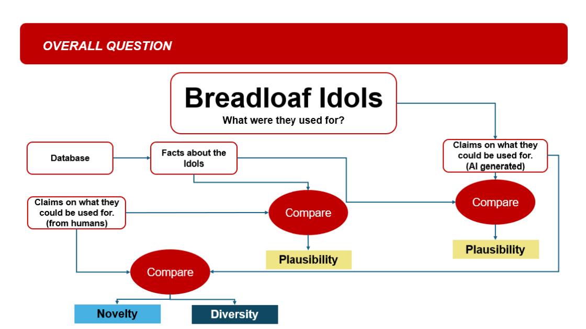

A
OVERALL LOGIC
What exactly is being compared?
Human and AI-generated claims are compared in two ways. First, their idea space is evaluated for novelty and diversity. Second, each claim is compared with facts about the idols to estimate plausibility.
